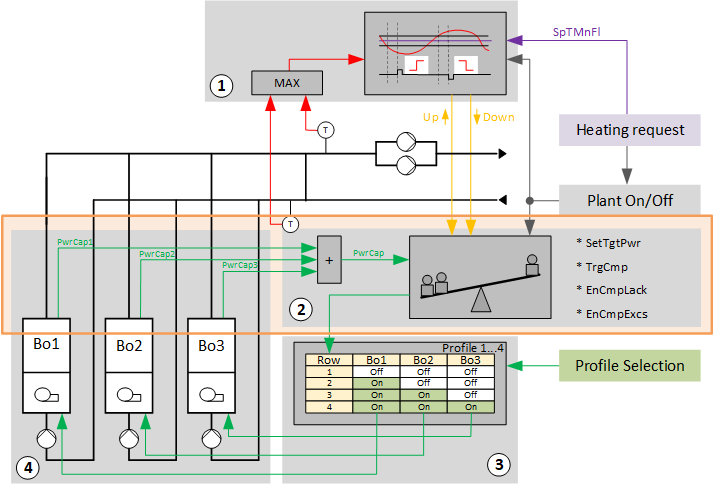
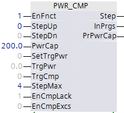

[PWR_CMP] 功率控制和补偿
功能块 PWR_CMP 接收来自“Step up/down”的请求，要求由于脉冲“Step up”或“Step down”而增加或减少功率。
PWR_CMP 接收来自“Step up/down”的请求，由于脉冲“Step up”或“Step down”而增加或减少功率。此请求立即更改当前步骤并触发对配置文件表中下一行或上一行的更改。
PWR_CMP 接收来自“Step up/down”的请求，由于脉冲“Step up”或“Step down”而增加或减少功率。该请求立即更改当前步骤并触发对“配置文件表”中下一行或上一行的更改。
然后，功率补偿检查“配置文件表”行中的变化是否导致当前生成的步骤输出所需的增加或减少。功率补偿接收输入 [PwrCap] 上热发生器当前产生的功率反馈，并将其与内部存储器 [PrPwrCap] 中的值进行比较。
如果未获得所需结果，功率控制会更改行，直到在 4 秒的延迟期内达到当前功率所需的增加或减少。

1 | Step up/down |
2 | 功率控制与补偿 |
3 | 型材表 |
4 | 发热 |
博1...博3 | 热发生器 1...3 |
SetTgtPwr | 设定目标功率 |
TrgCmp | 功率补偿触发 |
EnCmpLack | 发生断电时启用自动功率补偿 |
EnCmpExcs | 增益时启用自动功率补偿 |
PwrCap | 锅炉功率能力 |
SpTMnFl | 主流温度设定值 |
Use of internal memory
功能块 PWR_CMP 使用内部存储器来纠正与计划增加或减少的偏差。
- Increase the internal memory for Step up:
The internal memory is increased for Step up by 1 [kW]. At the same time, it changes to the next row in the profile table. The power of the switched-on heat generator [PwrCap] is sent back to PWR_CMP. If the power is higher than the value in memory, the current row in the profile table is retained and the value from [PwrCap] is written to internal memory [PrPwrCap]. If the power is still lower than the value in memory, it switches to the next row in the profile table until the power is higher than the value in memory. - Reduce the internal memory for Step down:
The memory is reduced for Step down by 1 [kW]. At the same time, it changes to the previous row in the profile table. The power of the switched-on heat generator [PwrCap] is sent back to "power control and compensation". If the power is lower than the value in memory, the current row in the profile table is retained and the value from [PwrCap] is written to internal memory [PrPwrCap]. If the power is still higher than the value in memory, it is switched to the next row in the profile table until the power is lower than the value in memory.
Detailed workflow using the example for "Step up"
- Power control and compensation receives an impulse "Step up" on input [StepUp] from "Step up/down".
- Power control and compensation sends a command to the profile table to change to the next row.
- The stage is started for the heat generator as defined in this row.
- As a result, power control receives feedback on input [PwrCap] on the new, current power produced by the heat generator.
It remains on this row if the value of the newly reported, currently produced power is greater than the value in memory.

只要热发生器没有故障，这通常是正确的。如果当前产生的新功率保持不变，则功率控制和补偿将更改到配置文件表中的下一行。重复该工作流程，直到报告的当前产生的功率大于内存中的值。一旦出现这种情况，报告的当前产生的功率将再次保存并显示为输出上当前产生的功率 [PrPwrCap]。
配置文件表 SELP_8MS 可以通过其输出 [PrRowMax] 传输带有有效条目的最后一行。 “功率控制和补偿”在输入 [MaxPos] 上接收该值并确定允许继续切换的行。
技术实现：
- [PwrCap] and [PrPwrCap] are compared in cycles, at a cycle period of 4 [s].
- [PrPwrCap] in the internal program logic is increased for an impulse "Step up" by 1 [kW].
- The logic demands more power due to the resultant imbalance between [PwrCap] and [PrPwrCap].
At a cycle duration of 4 [s], it sends a "Step up" impulse until [PwrCap] is greater than [PrPwrCap]. - The system is once again in balance and [PwrCap] is written to the internal memory as [PrPwrCap].
Auxiliary functions
可以激活或禁用以下辅助功能：
- Request for target power:
An impulse on input [SetTgtPwr] deploys the function to the power specified on input [TgtPwr].
The power on [TgtPwr] is saved and steps are initiated in the profile table until the value on [PwrCap] is greater than or equal to. - Forced compensation:
A pulse on input [TrgCmp] restores the original power on [PrPwrCap] in sequential steps, e.g. due to a loss of a heat generator caused by a fault and if no [EnCmpLack] was enabled. - Automatic power compensation in the event of a power shortage [EnCmpLack]:
Power shortage is detected based on input [PwrCap] and balanced by sequential steps, e.g. due to a loss of a heat generator caused by a fault. - Automatic power compensation in the event of a power excess [EnCmpExcs]:
Power gain is detected based on input [PwrCap] and balanced by sequential steps, e.g. due to manually switching on a heat generator.
Interfaces

输入 | 描述 | 数据类型 | 默认值 |
|---|---|---|---|
EnFnct | Enable function | 布尔值 | 0 |
StepUp | Step up | 布尔值 | 0 |
StepDn | Step down | 布尔值 | 0 |
PwrCap | 锅炉功率能力 | 真实的 | 0 [kW] |
SetTgtPwr | 设定目标功率 | 布尔值 | 0 |
|
TgtPwr | 触发后的功率目标（设置目标功率） | 真实的 | 0 [kW] |
|
TrgCmp | 功率补偿触发（不足或超出都会补偿） | 布尔值 | 0 |
StepMax | 轮廓的最大可能阶段 | 多态 | 4 |
EnCmpLack | 发生断电时启用自动功率补偿 | 布尔值 | 1 |
EnCmpExcs | 增益时启用自动功率补偿 | 布尔值 | 0 |
输出 | 描述 | 数据类型 | 默认值 |
|---|---|---|---|
|
步 | 功率级（电流） | 多态 | 0 |
InPrgs | In progress 功率控制和补偿有效（级变） | 布尔值 | 0 |
PrPwrCap | 当前请求的功率容量 | 真实的 | 0 [kW] |
Sequence operation multiple energy generators
各个发电机根据当前电力需求和所选设置打开或关闭。
可以使用以下功能：
- Step up/down (using the interconnected chart "Step up/down")
- Power control and compensation (using the interconnected chart "Power control and compensation balance")
- Profile table (implemented with SELP8_MS)
- Energy generator 1..x